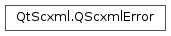

QScxmlError¶
Synopsis¶
Detailed Description¶
The
PySide2.QtScxml.QScxmlErrorclass describes the errors returned by the Qt SCXML state machine when parsing an SCXML file.
-
class
PySide2.QtScxml.QScxmlError¶ -
class
PySide2.QtScxml.QScxmlError(arg__1) -
class
PySide2.QtScxml.QScxmlError(fileName, line, column, description) Parameters: - line –
PySide2.QtCore.int - description – unicode
- arg__1 –
PySide2.QtScxml.QScxmlError - column –
PySide2.QtCore.int - fileName – unicode
Creates a new invalid SCXML error.
Constructs a copy of
other.Creates a new valid SCXML error that contains the error message,
description, as well as thefileName,line, andcolumnwhere the error occurred.- line –
-
PySide2.QtScxml.QScxmlError.column()¶ Return type: PySide2.QtCore.intReturns the column in which the error occurred.
-
PySide2.QtScxml.QScxmlError.description()¶ Return type: unicode Returns the error message.
-
PySide2.QtScxml.QScxmlError.fileName()¶ Return type: unicode Returns the name of the file in which the error occurred.
-
PySide2.QtScxml.QScxmlError.isValid()¶ Return type: PySide2.QtCore.boolReturns
trueif the error is valid,falseotherwise. An invalid error can only be created by calling the default constructor or by assigning an invalid error.
-
PySide2.QtScxml.QScxmlError.line()¶ Return type: PySide2.QtCore.intReturns the line on which the error occurred.
-
PySide2.QtScxml.QScxmlError.toString()¶ Return type: unicode This convenience method converts an error to a string. Returns the error message formatted as: “filename:line:column: error: description”
© 2018 The Qt Company Ltd. Documentation contributions included herein are the copyrights of their respective owners. The documentation provided herein is licensed under the terms of the GNU Free Documentation License version 1.3 as published by the Free Software Foundation. Qt and respective logos are trademarks of The Qt Company Ltd. in Finland and/or other countries worldwide. All other trademarks are property of their respective owners.